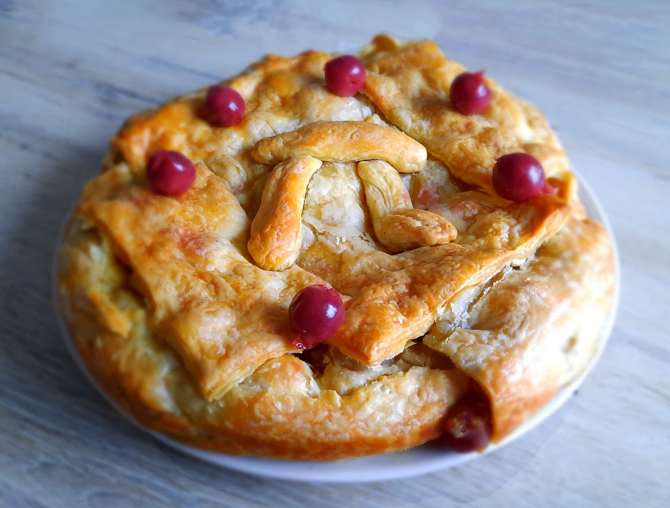

black cherry kiss cocktail

varkenshaas in kriek
coq au vin

griekse vega gyros wraps

kokossoep
cottage pie

plaattaart met spinazie en peer

quesadilla
chili sin carne met guacamole

cubanos

enchiladas

ananas beignets

crêpe met fruit

finse witte kool rolletjes

kip in de hoed

Bereidingsduur: 80 minuten
Aantal personen: 4
Ingrediënten:
350 gram kersen in kersensap
400 gram (vegetarische) kipstukjes
1 teentje knoflook
3 eetlepels vloeibare boter
1 ui
1 theelepel sambal
3 eetlepels kerriepoeder
200 gram creme fraiche
3 eetlepels bloem
10 plakjes bladerdeeg
2 eetlepels paneermeel
2 handjes geraspte kaas
2 eetlepels melk
1 eetlepel gemberpoeder
350 gram kersen in kersensap
400 gram (vegetarische) kipstukjes
1 teentje knoflook
3 eetlepels vloeibare boter
1 ui
1 theelepel sambal
3 eetlepels kerriepoeder
200 gram creme fraiche
3 eetlepels bloem
10 plakjes bladerdeeg
2 eetlepels paneermeel
2 handjes geraspte kaas
2 eetlepels melk
1 eetlepel gemberpoeder
Instructies:
1. Verwarm de oven voor op 200 graden. Neem een springvorm van 24 cm en leg bakpapier op de bodem. Bestrijk de randen met boter.
2. Pak een vergiet en laat de kersen uitlekken en vang het sap eventueel op, snijd de kipfilet en marineer met peper en zout. Snijd de ui in snippers. Bak de kip in een pan goudbruin. Pers de knoflook en voeg samen met de ui toe aan de kip en bak kort.
3. Maak ondertussen roux van kerriepoeder, de boter en bloem. Voeg dit toe aan de kip en voeg de kersen, creme fraiche, sambal en gemberpoeder toe. Laat dit enkele minuten op zacht vuur koken.
4. Neem de plakjes bladerdeeg uit de verpakking en bekleed met 7 plakjes de bodem en zijkanten van de springvorm. Prik enkele gaatjes in de bodem met een vork. Strooi het paneermeel erover en schep de kip op het deeg. Leg wat kaas bovenop het kipmengsel.
5. Vouw de randen van het deeg over de kaas en leg de laatste bladerdeegplakjes op het mengsel tot deze is afgesloten. Bestrijk de taart met melk. Bak in 45 minuten.
1. Verwarm de oven voor op 200 graden. Neem een springvorm van 24 cm en leg bakpapier op de bodem. Bestrijk de randen met boter.
2. Pak een vergiet en laat de kersen uitlekken en vang het sap eventueel op, snijd de kipfilet en marineer met peper en zout. Snijd de ui in snippers. Bak de kip in een pan goudbruin. Pers de knoflook en voeg samen met de ui toe aan de kip en bak kort.
3. Maak ondertussen roux van kerriepoeder, de boter en bloem. Voeg dit toe aan de kip en voeg de kersen, creme fraiche, sambal en gemberpoeder toe. Laat dit enkele minuten op zacht vuur koken.
4. Neem de plakjes bladerdeeg uit de verpakking en bekleed met 7 plakjes de bodem en zijkanten van de springvorm. Prik enkele gaatjes in de bodem met een vork. Strooi het paneermeel erover en schep de kip op het deeg. Leg wat kaas bovenop het kipmengsel.
5. Vouw de randen van het deeg over de kaas en leg de laatste bladerdeegplakjes op het mengsel tot deze is afgesloten. Bestrijk de taart met melk. Bak in 45 minuten.
gooi het kersensap niet weg! Je kan hier nog zoveel andere gerechten of drankjes van maken!